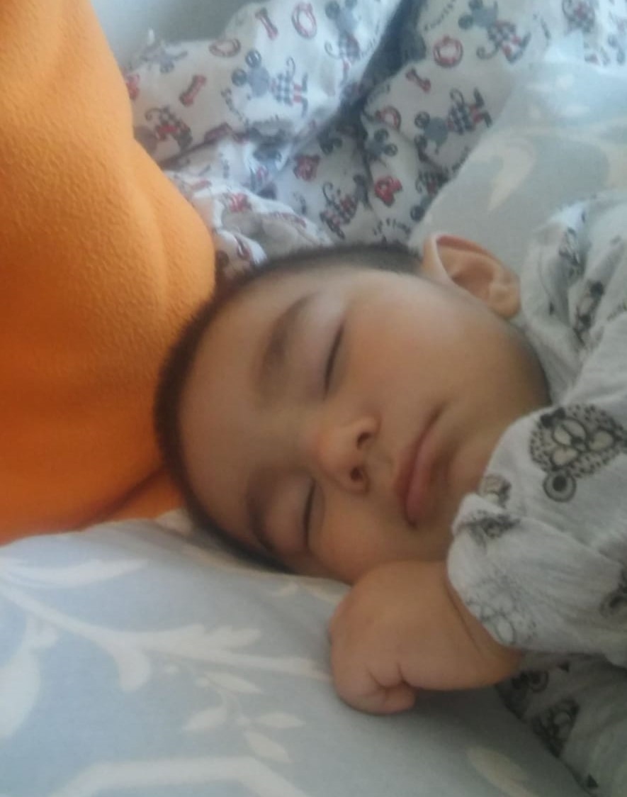

Suat KARADENIZ, Ph.D.
Please click here for my contact info and to reach me
A Husband and the father of two great kids.
A strong believer in lifelong learning and growing.
Educational
PhD, Fatih University, Mathematics-2011, Istanbul-Turkey
MSc, Fatih University, Mathematics-2008, Istanbul-Turkey
BS,
METU ( Middle East Technical University)
, Mathematics-1997, Ankara-Turkey
Licenses & Certifications
Data Analyst in Python, Dataquest
Neural Networks and Deep Learning, deeplearning.ai
Data Scientist with Python Track, Data Camp
Professional Experience
Visiting Assistant Professor, Mercer University, Macon, GA, Mathematics, Aug.2019-Jun. 2020
Online instructor, Tutor.com, Calculus, Calculus AB, Linear Algebra Sept. 2018- Aug 2019
Visiting Professor, Texas A&M University, Texarkana, Mathematics, Sept. 2017- May 2018
Visiting Professor, Texas A&M University, Texarkana, Mathematics, Sept. 2017- May 2018
Associate Professor, Fatih University, Mathematics Department ,Sept. 2014-Jul. 2016
Assistant Professor, Fatih University, Mathematics Department, Oct. 2011-Aug. 2014
Lecturer, Fatih University, Mathematics Department, Oct. 2008- Sep. 2011
Teaching Assistant, Fatih University, Mathematics Department, Oct. 2006- Sep. 2008